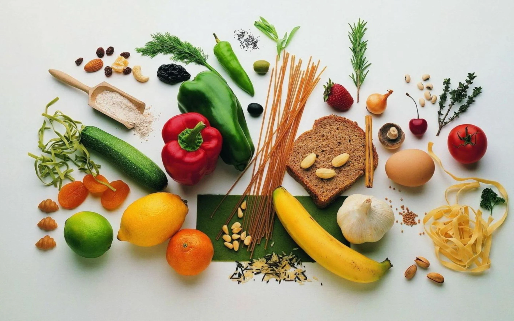
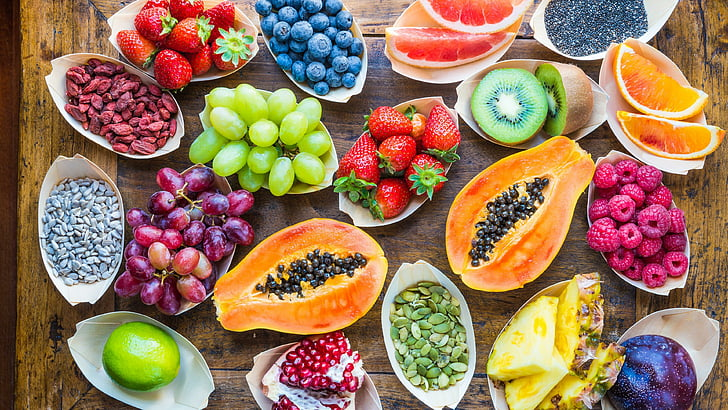
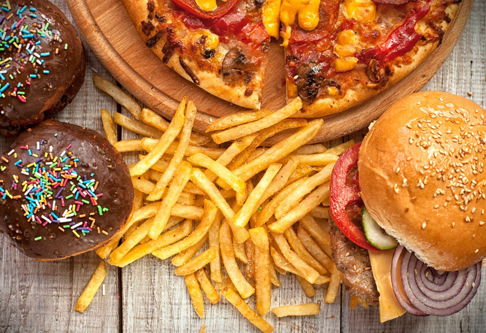

Food is any substance consumed to provide nutritional support for an organism. Food is usually of plant, animal, or fungal origin, and contains essential nutrients, such as carbohydrates, fats, proteins, vitamins, or minerals. The substance is ingested by an organism and assimilated by the organism's cells to provide energy, maintain life, or stimulate growth. Different species of animals have different feeding behaviours that satisfy the needs of their unique metabolisms, often evolved to fill a specific ecological niche within specific geographical contexts.
Organic food is grown without the use of synthetic chemicals, such as human-made pesticides and fertilizers, and does not contain genetically modified organisms (GMOs).
ProductsInorganic foods are that food which has utilized synthetic products, such as chemical fertilizers and pesticides, in their production. Genetically modified food is also considered inorganic.
Products